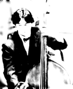

Code for Me ?
There is a code for me.
There is a code for you.
There is a code for him.
There is a code for her.
There is a code for everybody.
There is the happy life by a code !
J.-I.S.
A code makes me happy.
A code makes everyone happy.
A code makes a life happy.
A code makes the world happy.
Research
- My Interest
- Biocomputing
- Statistical Analysis for Bio-Sequences
- Microarray Data mining
- Molecular Evolution, "D'ùovenons-nous? Que sommes-nous? Oùallons-nous?" (Eugène Henri Paul Gauguin)
- Theory of Knowledge
- Work History
- Genome Biotechnology Laboratory, Kanazawa Institute of Technology
- Computational Biology Research Center, National Institute of Advanced Industrial Science and Technology
- Education
- Graduate School of Agricultural and Life Sciences, The University of Tokyo (Ph.D.)
- Department of Chemistry, Gakushuin University
- Saitama Prefectural Kasukabe High School

Musics
- Piano
- Tuba
- Trumpet
- Kontrabass

Football
i'm supporter of URAWA REDS.
Football
3